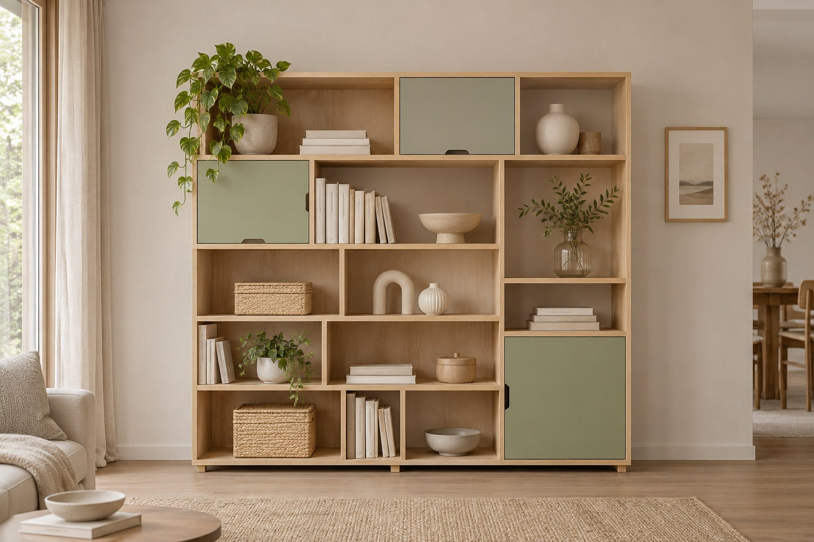

Стеллаж «Модуль»
Система отдельных модулей
Открытые полки под дерево и несколько закрытых секций для мелочей.
- Раскладку модулей можно подобрать под стену
- Открытая и закрытая зоны в одном стеллаже
Мебель для гостиной и прихожей. В каждой модели открытые и закрытые секции решают разные задачи хранения.


Система отдельных модулей
Открытые полки под дерево и несколько закрытых секций для мелочей.

Низкая горизонтальная тумба
Три спокойные секции с песочными фасадами и тонкой древесной деталью.

Квадратные секции для гостиной
Ритмичная сетка ячеек с чередованием открытых ниш и оливковых дверец.

Тумба для обуви и место для переобувания
Компактная мебель для входной зоны: скамья, крючки и отделения для обуви и мелочей.